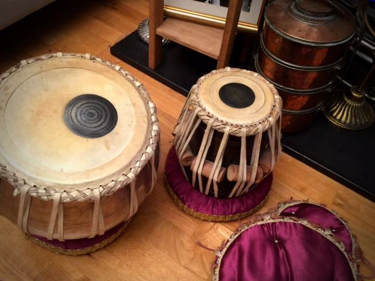
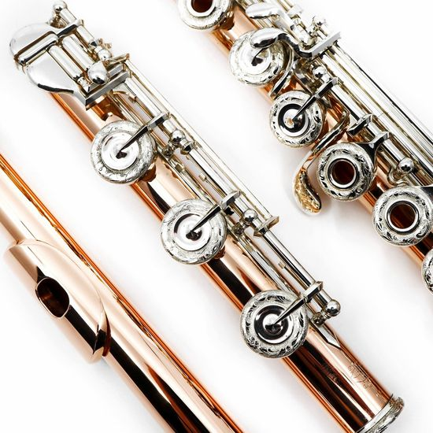
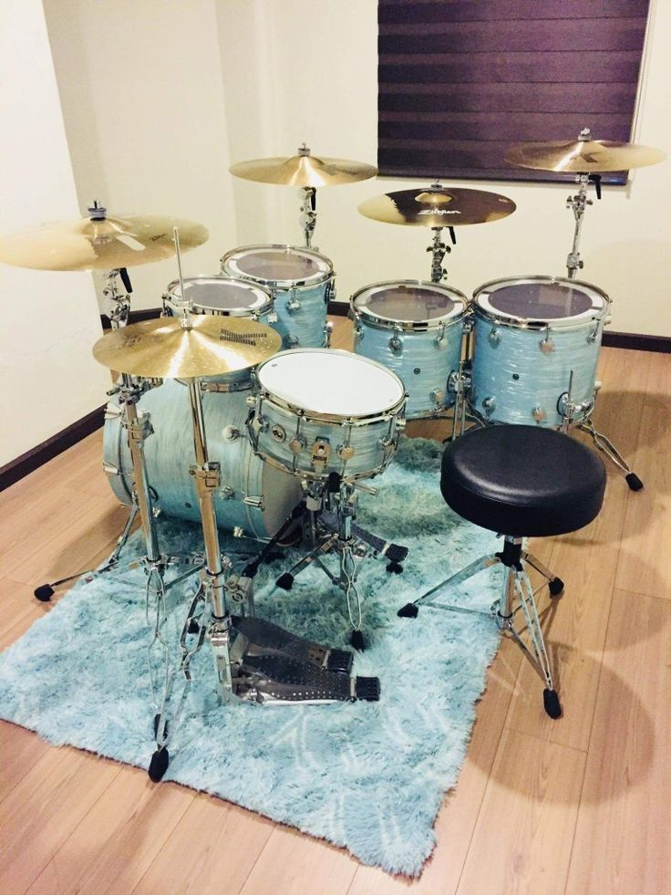

guitar, Plucked stringed instrument. It normally has six strings, a fretted fingerboard, and a soundbox with a pronounced waist. It probably originated in Spain in the early 16th century. By 1800 it was being strung with six single strings; 19th-century innovations gave it its modern form.

TABLA
The tabla consists of two small drums of slightly different sizes and shapes. Each drum is made of hollowed-out wood, clay or metal. The smaller drum (dayan/tabla) is used for creating treble and tonal sounds, while the primary function of the larger drum (baya/dagga) is for producing bass.

FLUTE
The flute is a musical instruments in the woodwind group. Like all woodwinds, flutes are aerophones, producing sound with a vibrating column of air. Unlike woodwind instruments with reeds, a flute produces sound when the player's air flows across an opening.

DRUM
drum, Musical instrument, the sound of which is produced by the vibration of a stretched membrane. Drums are usually either cylindrical or bowl-shaped. The drum is a universal instrument and very ancient; a drum dating to 6000 bc has been found in Moravia. Drums have been important ritually in cultures worldwide.